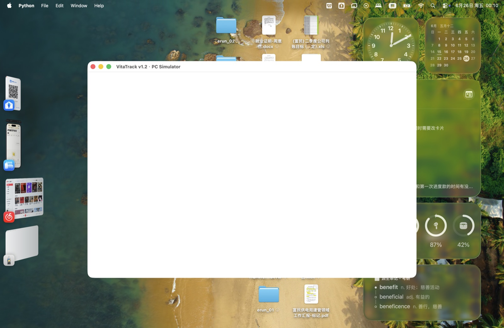
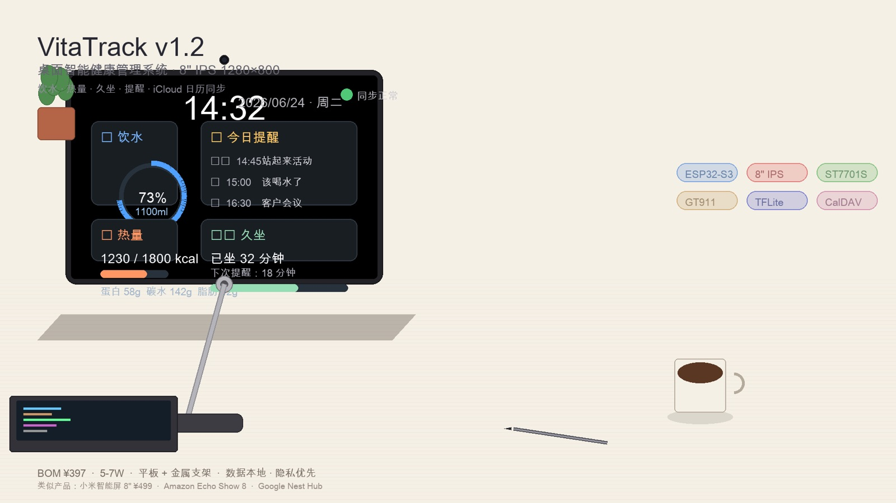
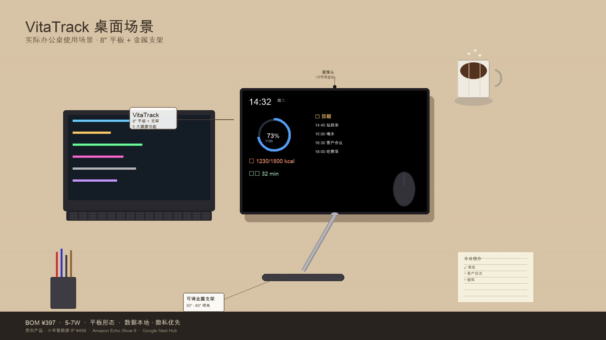
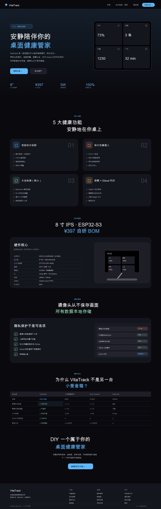

8 寸桌面主屏：喝水打卡、热量摄入、久坐提醒、日程提醒，iCloud 日历双向同步。
数据本地 · 隐私优先 · 安静陪伴 · Apple 生态打通。
一块放在办公桌上的 8 寸主屏，解决久坐办公人群的三个老毛病：忘记喝水、久坐不动、日程混乱。完全本地运行、摄像头数据不入库、无广告无社交 — 它只关心你。
前四张是 PC 模拟器的真实运行截图（主屏 / 饮水 / 久坐 / 提醒），中间两张是产品渲染图，最后是官网 mockup — 下方 LIVE DEMO 模拟器的数据与这些 UI 稿一一对应。




久坐办公人群的三个老毛病 — 忘记喝水、久坐不动、日程混乱 — 再叠加对云服务的隐私焦虑，手机 App 解决不了。VitaTrack 用一块桌面主屏逐一给出答案。
| 痛点 | VitaTrack 的解法 |
|---|---|
| 一坐一整天，忘记喝水 | 一键 +200ml / 自定义量，圆环进度 + 时段统计 + 7/30 天趋势，喝水这件小事终于有了反馈 |
| 久坐不动，腰颈报警 | 摄像头 + BlazeFace 人脸识别：50 分钟提醒、离开 5 分钟自动重置、23:00–8:00 免打扰 |
| 日程混乱，手机推送轰炸 | 主屏提醒 Widget + iCloud 双向同步，喝水、久坐事件自动生成提醒，不用手动记 |
| 健康数据不想上云 | 完全本地运行：人脸特征向量和原始画面不入库，饮水 / 热量数据不上云 |
| 智能屏全是广告和社交 | 极简 OLED 风格，无广告、无社交、可深度定制 — 它只关心你 |
8 寸主屏模拟器（1280×800 等比）：实时状态栏 + 2×2 功能卡片。点「+200ml」看圆环动画，给热量卡记一笔饭，加速一次久坐倒计时，再加一条提醒看 iCloud 同步 — 数据与真机 UI 稿一致。
模拟器数据与主屏 UI 稿一致：饮水 1100/1500ml（73%）、热量 1230/1800 kcal（P58 C142 F42）、久坐 50 分钟提醒阈值。
从早上入座到夜间息屏，一次完整的使用流程 — 每一步都来自 VitaTrack 的 UX 流程文档。
VitaTrack 把「数据去哪了」写成一张明表：健康数据永远留在本地，唯一出设备的是用户授权的日历同步。性能上则以 60 FPS 渲染和亚秒级恢复为基线。
🔐 隐私原则（README）
| 数据 | 存储 | 上云 |
|---|---|---|
| 饮水记录 | 本地 | ❌ 不上云 |
| 热量摄入 | 本地 | ❌ 不上云 |
| 人脸特征向量 | 不入库 | ❌ 不上云 |
| 摄像头原始画面 | 不入库 | ❌ 不上云 |
| 提醒事项 | 本地 | ⚠️ 可选同步 iCloud |
| iCloud 日历 | 本地 + iCloud | ✅ 用户授权 |
⚡ 性能基线（UX-Flow 文档）
| 指标 | 目标 |
|---|---|
| 主屏渲染 | 60 FPS |
| 触摸响应 | < 100ms |
| 页面切换 / 弹窗显示 | < 200ms |
| 数据更新到 UI | < 50ms |
| 启动到主屏 | < 3s |
| 冷启动数据恢复 | < 1s |
| 模块 | 状态 | 说明 |
|---|---|---|
| v0.1.2 选型与定义 | 已完成 | 5 大功能定义、硬件选型、BOM、13 个 ADR |
| 软件设计层（95%） | 已完成 | 主屏 2×2 网格 UI、SQLite 7 张表、PC 模拟器可跑 |
| 业务逻辑层（70%） | 进行中 | Service TODO、页面导航栈未实现 |
| 硬件抽象层（0%） | 待启动 | OV2640 / ST7701S / GT911 驱动、TFLite 部署 |
| 实机点亮屏幕 v0.2 | 待启动 | 物料待采购，目标 2026/07/15 |